MAXimal
добавлено: 11 Jun 2008 10:14
редактировано: 24 Aug 2011 12:06
Содержание [скрыть]
Нахождение уравнения прямой для отрезка
Задача — по заданным координатам конца отрезка построить прямую, проходящую через него.
Мы считаем, что отрезок невырожден, т.е. имеет длину больше нуля (иначе, понятно, через него проходит бесконечно много различных прямых).
Двумерный случай
Пусть дан отрезок 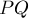, т.е. известны координаты его концов 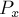, 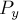, 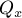, 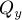.
Требуется построить уравнение прямой на плоскости, проходящей через этот отрезок, т.е. найти коэффициенты  ,
,  ,
,  в уравнении прямой:
в уравнении прямой:
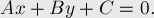
Заметим, что искомых троек 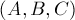, проходящих через заданный отрезок, бесконечно много: можно умножить все три коэффициента на произвольное ненулевое число и получить ту же самую прямую. Следовательно, наша задача — найти одну из таких троек.
Нетрудно убедиться (подстановкой этих выражений и координат точек  и 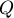 в уравнение прямой), что подходит следующий набор коэффициентов:
и 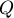 в уравнение прямой), что подходит следующий набор коэффициентов:
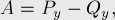
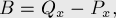
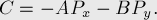
Целочисленный случай
Важным преимуществом такого способа построения прямой является то, что если координаты концов были целочисленными, то и полученные коэффициенты также будут целочисленными. В некоторых случаях это позволяет производить геометрические операции, вообще не прибегая к вещественным числам.
Однако есть и небольшой недостаток: для одной и той же прямой могут получаться разные тройки коэффициентов. Чтобы избежать этого, но не уходить от целочисленных коэффициентов, можно применить следующий приём, часто называемый нормированием. Найдём наибольший общий делитель чисел 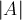, 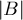, , поделим на него все три коэффициента, а затем произведём нормировку знака: если 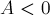 или 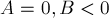, то умножим все три коэффициента на  . В итоге мы придём к тому, что для одинаковых прямых будут получаться одинаковые тройки коэффициентов, что позволит легко проверять прямые на равенство.
. В итоге мы придём к тому, что для одинаковых прямых будут получаться одинаковые тройки коэффициентов, что позволит легко проверять прямые на равенство.
Вещественнозначный случай
При работе с вещественными числами следует всегда помнить о погрешностях.
Коэффициенты и получаются у нас порядка исходных координат, коэффициент — уже порядка квадрата от них. Это уже может быть достаточно большими числами, а, например, при пересечении прямых они станут ещё больше, что может привести к большим ошибкам округления уже при исходных координатах порядка 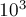.
Поэтому при работе с вещественными числами желательно производить так называемую нормировку прямой: а именно, делать коэффициенты такими, чтобы 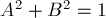. Для этого надо вычислить число 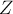:
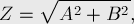
и разделить все три коэффициента , , на него.
Тем самым, порядок коэффициентов и уже не будет зависеть от порядка входных координат, а коэффициент будет того же порядка, что и входные координаты. На практике это приводит к значительному улучшению точности вычислений.
Наконец, упомянем о сравнении прямых — ведь после такой нормировки для одной и той же прямой могут получаться только две тройки коэффициентов: с точностью до умножения на . Соответственно, если мы произведём дополнительную нормировку с учётом знака (если 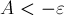 или 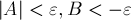, то умножать на ), то получающиеся коэффициенты будут уникальными.
Трёхмерный и многомерный случай
Уже в трёхмерном случае нет простого уравнения, описывающего прямую (её можно задать как пересечение двух плоскостей, т.е. систему двух уравнений, но это неудобный способ).
Следовательно, в трёхмерном и многомерном случаях мы должны пользоваться параметрическим способом задания прямой, т.е. в виде точки  и вектора
и вектора  :
:
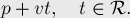
Т.е. прямая — это все точки, которые можно получить из точки прибавлением вектора с произвольным коэффициентом.
Построение прямой в параметрическом виде по координатам концов отрезка — тривиально, мы просто берём один конец отрезка за точку , а вектор из первого до второго конца — за вектор .